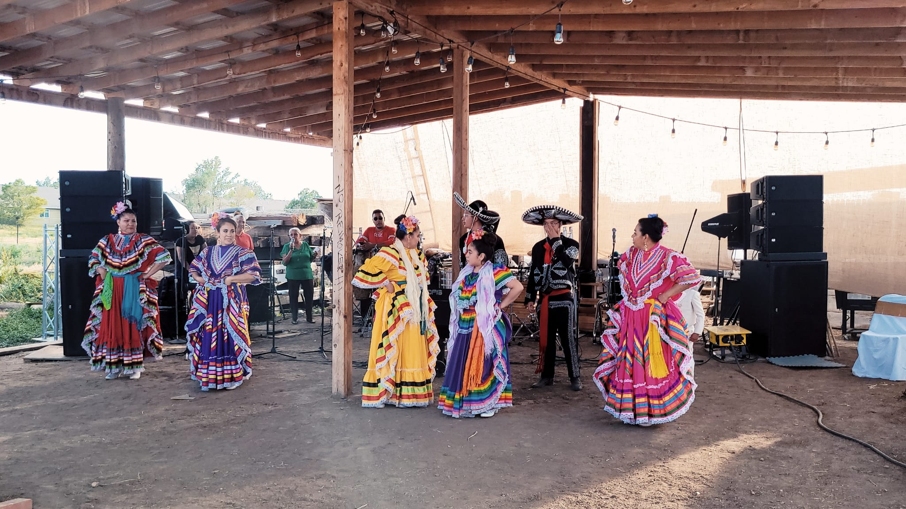

Folklorico dancing originates from Mexico. There are many different sytles of Folklor that come from each state. Folklorico is mostly known from the long wide dresses with ribbons wich is the main costume the group Orgulloso Latino uses but there are many different types of dress styles depending on the state. What makes Folklorico dancing unique is that the shoes the dancers wear have nails hammered into the toes and heels to have more of an effect to the tapping, scraping, and stomping. Orgulloso Latinos is taught by Teresa who has been dancing since she was a child and is now teaching to those who want to learn the art of Folklorico. Orgullos Latinos has been dancing from twenty years and hopefully many more.

Anyone can become a Folklorico dancer. So far Orgulloso latinos is made up of 9 dancers. Five girls and 4 charros. Charros are what the boy dancers are called. Sometimes when a folklorico group performs they have some singers within the group to perform a song.Orgulloso Latinos have performed at Latin events, Quinceaneras, Car shows, birthday parties, and baptisms.